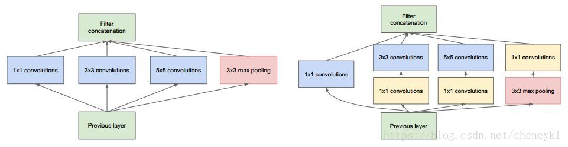
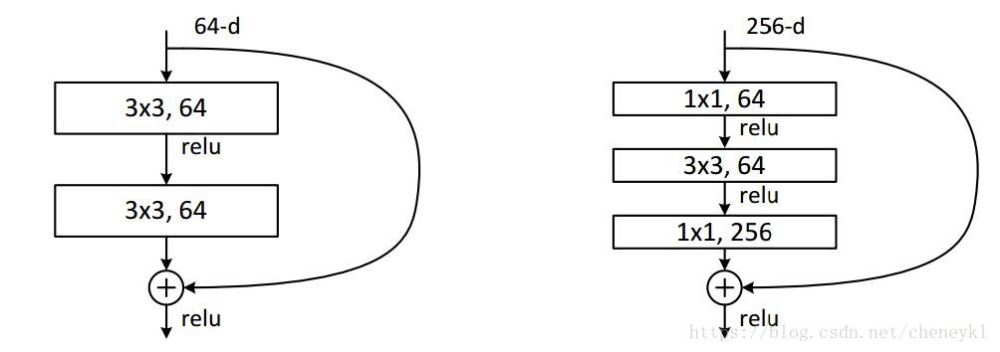

输入的feature map是28*28*192,1*1卷积通道为64,3*3卷积通道为128,5*5卷积通道为32,左图卷积核参数：192 * (1*1*64) +192 * (3*3*128) + 192 * (5*5*32) = 387072,右图对3*3和5*5卷积层前分别加入了通道数为96和16的1*1卷积层，这样卷积核参数就变成了: 192 * (1*1*64) +（192*1*1*96+ 96 * 3*3*128）+（192*1*1*16+16*5*5*32）= 157184,同时在并行pooling层后面加入1*1卷积层后也可以降低输出的feature map数量.(feature map尺寸指W、H是共享权值的sliding window，feature map 的数量就是channels).左图feature map数量：64 + 128 + 32 + 192(pooling后feature map不变) = 416.(如果每个模块都这样，网络的输出会越来越大)右图feature map数量：64 + 128 + 32 + 32(pooling后面加了通道为32的1*1卷积) = 256

假设上一层的feature map是W*H*256, 输出的是256个feature map.
左侧的操作树: W*H*256*3*3*256 = 589824*W*H;
右侧的操作树: W*H*256*1*1*64 + W*H*64*3*3*64 + W*H*64*1*1*256 = 69632*W*H;
左侧参数大概是右侧的8.5倍.
备注: 从fully-connected layers的角度来理解1*1卷积核, 可以将其看成全连接层.